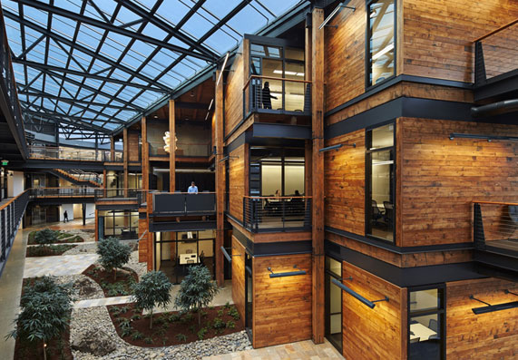
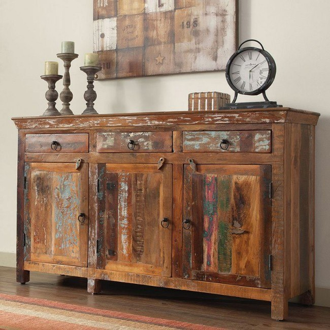
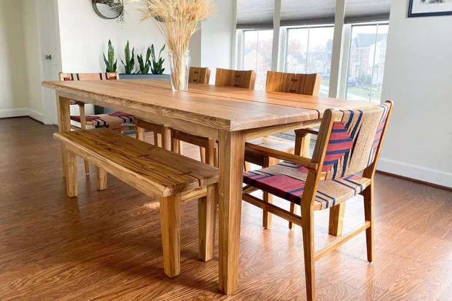

Wood is Life

Once upon a time, there was a carpenter who was passionate about his
craft, but was also concerned about the impact that traditional
woodworking had on the environment. He knew that traditional
carpentry practices often involved the use of non-renewable
resources and generated a lot of waste.
Determined to make a change, the carpenter began to research and
explore sustainable carpentry practices. He learned about the use of
eco-friendly materials, such as reclaimed wood, bamboo, and cork. He
discovered the importance of responsible sourcing and found local
suppliers who provided sustainably sourced wood.
He started to incorporate recycling and repurposing into his work.
He would salvage discarded wood and give it new life by transforming
it into beautiful, functional pieces of furniture and flooring. He
would even reuse the scraps from his workshop for kindling and
compost.
As the carpenter continued to learn and implement sustainable
practices, he found that his work not only benefited the environment
but also resulted in unique and high-quality pieces of furniture.
His clients appreciated the beauty and craftsmanship of his work and
the peace of mind that came with knowing that their furniture was
made with sustainable practices.
Over time, the carpenter's reputation grew, and he became known as a
leader in sustainable carpentry. He inspired other carpenters to
follow in his footsteps and helped to create a community of
like-minded artisans who shared his vision for a more sustainable
future.
Work
Cabinetry

The cabinet features a unique design that showcases the beauty of reclaimed wood and transforms it into a functional piece of furniture. Every knot and grain in the wood tells a story, making this cabinet a one-of-a-kind creation that is both environmentally conscious and visually stunning.
Custom Flooring
Reclaimed hardwood flooring showcases the beauty and character of salvaged wood. With its rich colors, unique grain patterns, and natural distressing, it adds a touch of rustic charm to any space while also being an eco-friendly choice.
Custom Furniture

Custom handmade furniture made from recycled wood is a true testament to the artistry and creativity of its maker. Each piece is unique and tells a story, as the reclaimed wood used in its construction lends a distinct character and history to the final product.
About
In 2007, CUTZ was born from a mission to create beautiful and sustainable furniture, cabinetry, and wood flooring using refurbished wood to preserve our fragile forest ecosystems. The business was founded by a team of skilled craftspeople who shared a passion for woodworking and a commitment to environmental sustainability. They recognized the value in repurposing wood and giving it new life in the form of unique, handcrafted pieces.
Each piece of furniture, cabinetry, or wood flooring is meticulously crafted with a focus on durability and aesthetics. The team works closely with their clients to understand their specific needs and preferences, resulting in truly personalized products.
We are the go-to destination for anyone seeking custom, handcrafted woodwork that is both beautiful and eco-friendly.
Contact
We may have sawdust in our ears, but we would love to hear from you!